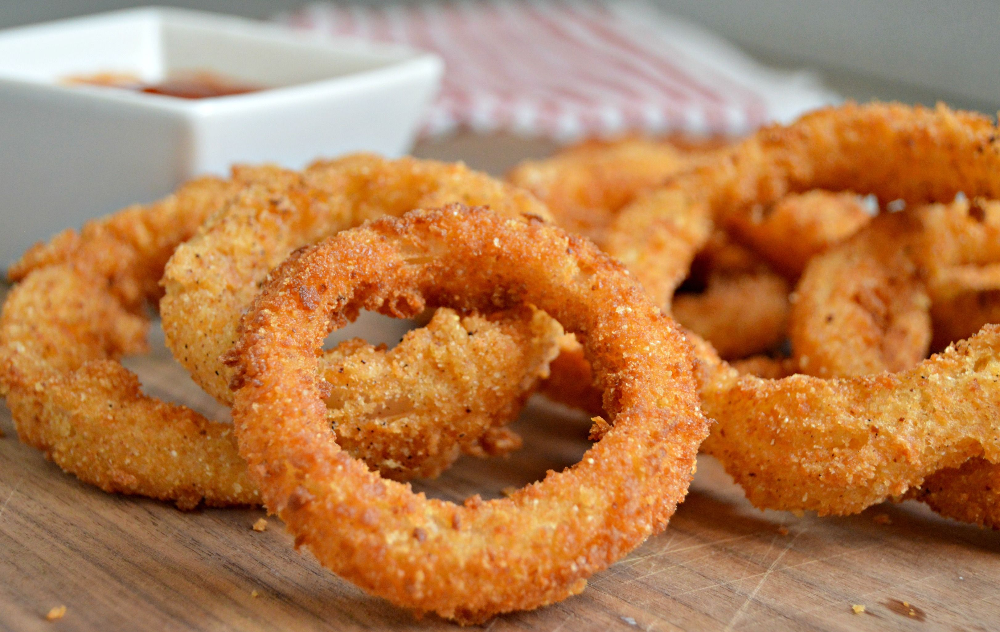
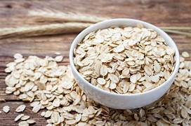

CEBOLLA | QUE VARIEDAD UTILIZAR EN LAS RECETAS
Cocina Palomares, Dec 1, 2022

una variedad de cebolla para cada ocasion Para cada plato hay un tipo particular de cebolla que puede realzar los sabores, vamos a ver como se elige la correcta, para todas las recetas. Protagonista de la cocina italiana e internacional, las cebollas desempeñan un papel fundamental...
Leer mas
COPOS DE AVENA | VALORES NUTRICIONALES, CALORIAS Y PROPIEDADES
Cocina Paloma, Sep 5, 2022

Copos de avena: valores nutricionales, calorias y propiedades. Los copos de avena son derivado natural de los granos de avena: veamos sus valores nutricionales, propiedes beneficiosas y usos mas comunes. Los copos de avena son un producto alimenticio obtenido por la presion mecanica de los...
Leer mas
Ver mas entradas